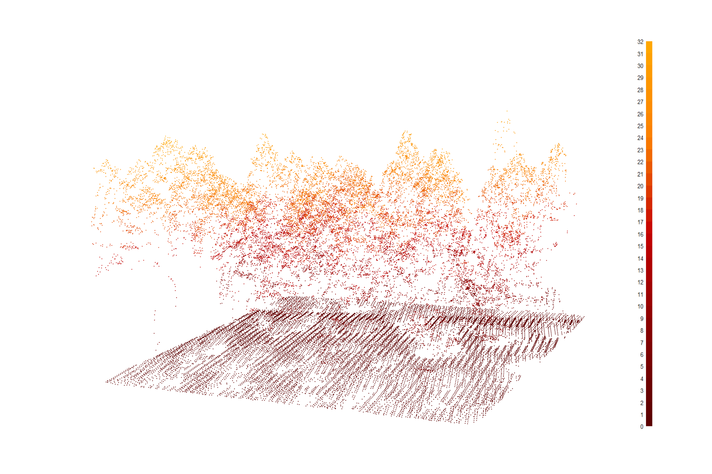
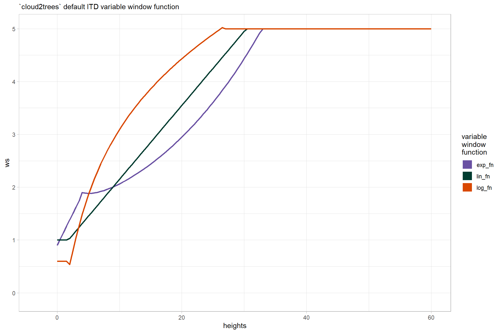

Section 5 CBH Process
let’s go through the process to extract CBH from the point cloud
5.1 Example lidar data
we’ll use some of our trees and height-normalized point cloud data generated in our point cloud processing
load the tree crown polygons
# get the data from already run
crowns_sf <-
list.files(
"../data/point_cloud_processing_delivery"
, pattern = "final_detected_crowns.*\\.gpkg$"
, full.names = T
) %>%
normalizePath() %>%
purrr::map(\(x)
sf::st_read(
dsn = x
, quiet = T
)
) %>%
dplyr::bind_rows()load the central 0.1 ha area of our study area
aoi <-
sf::st_read("../data/point_cloud_processing_delivery/raw_las_ctg_info.gpkg") %>%
sf::st_union() %>%
sf::st_centroid() %>%
sf::st_buffer(sqrt(1000/4), endCapStyle = "SQUARE") %>%
sf::st_transform(sf::st_crs(crowns_sf))## Reading layer `raw_las_ctg_info' from data source
## `C:\Data\usfs\lidar_phys_fire_mods\data\point_cloud_processing_delivery\raw_las_ctg_info.gpkg'
## using driver `GPKG'
## Simple feature collection with 42 features and 34 fields
## Geometry type: POLYGON
## Dimension: XY
## Bounding box: xmin: 467000 ymin: 3808000 xmax: 473000 ymax: 3815000
## Projected CRS: NAD83(2011) / UTM zone 12Nfilter for trees in the aoi
crowns_sf <- crowns_sf %>%
# join so we get the full crown
dplyr::inner_join(
sf::st_intersection(crowns_sf, aoi) %>%
sf::st_drop_geometry() %>%
dplyr::distinct(treeID)
, by = "treeID"
) %>%
# make treeID numeric for later
dplyr::mutate(
treeID_bu = treeID
, treeID = treeID %>% as.factor %>% as.numeric()
) %>%
cloud2trees::simplify_multipolygon_crowns()now, we’ll load in the point cloud data for our aoi
las_ctg <- lidR::readLAScatalog("../data/point_cloud_processing_delivery/norm_las/")
lidR::opt_progress(las_ctg) <- F
las <- lidR::clip_roi(las_ctg, crowns_sf %>% sf::st_bbox() %>% sf::st_as_sfc() %>% sf::st_buffer(2))plot a sample
las %>%
lidR::plot(
color = "Z", bg = "white", legend = T
, pal = harrypotter::hp(n=50, house = "gryffindor")
)
now we’ll attach the treeID column to the normalized las file
las <- cloud2trees::polygon_attribute_to_las(las = las, poly_df = crowns_sf, attribute = "treeID", force_crs = T)let’s look at our point cloud colored by treeID

let’s filter for a single tree
# sf
one_tree_sf <- crowns_sf %>% dplyr::filter(tree_height_m == max(tree_height_m)) %>% dplyr::slice(1)
# las
one_tree_las <- las %>% lidR::filter_poi(treeID==one_tree_sf$treeID)check our one tree point cloud
one_tree_las %>%
lidR::plot(
color = "Z", bg = "white", legend = T
, pal = harrypotter::hp(n=50, house = "gryffindor")
)
5.2 Extract CBH
using the same settings as our processing
# CALL IT
ladderfuelsr_cbh_ans <- cloud2trees::ladderfuelsr_cbh(
las = one_tree_las
, min_vhp_n = 3
, voxel_grain_size_m = 1
, dist_btwn_bins_m = 1
, min_fuel_layer_ht_m = 1
, lad_pct_gap = 25
, lad_pct_base = 25
, num_jump_steps = 1
, min_lad_pct = 10
, frst_layer_min_ht_m = 1
) ## [1] "treeID: 21"## [1] "gaps_fbhs" "lad_profile" "gaps_perc" "metrics_distance"
## [5] "metrics_depth" "real_fbh" "real_depth" "eff_gap"
## [9] "layers_lad_df" "cbh_metrics"## Rows: 30
## Columns: 3
## $ treeID <fct> 21, 21, 21, 21, 21, 21, 21, 21, 21, 21, 21, 21, 21, 21, 21, 21,…
## $ height <dbl> 1.5, 2.5, 3.5, 4.5, 5.5, 6.5, 7.5, 8.5, 9.5, 10.5, 11.5, 12.5, …
## $ lad <dbl> 0.000000000, 0.002752691, 0.000000000, 0.000000000, 0.000000000…Create our own plot of the gaps and fuel layers base height in the vertical tree profile
ggplot() +
geom_path(data = ladderfuelsr_cbh_ans$lad_profile, mapping = aes(x = lad, y = height)) +
geom_point(data = ladderfuelsr_cbh_ans$lad_profile, mapping = aes(x = lad, y = height)) +
# gaps data
geom_hline(
data = ladderfuelsr_cbh_ans$gaps_fbhs %>%
dplyr::select(
tidyselect::starts_with("gap") & !tidyselect::starts_with("gap_")
) %>%
tidyr::pivot_longer(dplyr::everything())
, aes(yintercept = value, color = "gaps")
, linetype = "dotted"
, lwd = 1.2
) +
# fbh data
geom_hline(
data = ladderfuelsr_cbh_ans$gaps_fbhs %>%
dplyr::select(
tidyselect::starts_with("cbh") & !tidyselect::starts_with("cbh_")
) %>%
tidyr::pivot_longer(dplyr::everything())
, aes(yintercept = value, color = "FBHs")
, linetype = "dotdash"
, lwd = 1.2
) +
scale_color_manual(values = c("green4", "red"), name = "") +
scale_y_continuous(breaks = scales::extended_breaks(10)) +
theme_light() +
theme(legend.position = "top")
note, the gap and cbh columns in ladderfuelsr_cbh_ans$gaps_fbhs contain the data needed for the plot ( but not the gap_ and cbh_ columns ;/ ).
but what are these columns?
cbh- Height of the fuel layer base height (m)gap- Height of gap between fuel layers (m)
5.2.1 Return CBH Metrics
## Rows: 1
## Columns: 29
## $ treeID <fct> 21
## $ treeID1 <dbl> 21
## $ dptf1 <dbl> 19
## $ effdist1 <dbl> 10
## $ Hcbh1 <dbl> 11.5
## $ Hdist1 <dbl> 10.5
## $ Hdptf1 <dbl> 30.5
## $ max1 <dbl> 30.5
## $ Hcbh1_Hdptf1 <dbl> 98.31702
## $ max_height <dbl> 30.5
## $ nlayers <dbl> 1
## $ maxlad_Hcbh <dbl> 11.5
## $ maxlad_Hdist <dbl> 10.5
## $ maxlad_Hdptf <dbl> 30.5
## $ maxlad_dptf <dbl> 19
## $ maxlad_effdist <dbl> 10
## $ maxlad_lad <dbl> 98.31702
## $ max_Hcbh <dbl> 11.5
## $ max_Hdist <dbl> 10.5
## $ max_Hdptf <dbl> 30.5
## $ max_dptf <dbl> 19
## $ max_effdist <dbl> 10
## $ max_lad <dbl> 98.31702
## $ last_Hcbh <dbl> 11.5
## $ last_Hdist <dbl> 10.5
## $ last_Hdptf <dbl> 30.5
## $ last_dptf <dbl> 19
## $ last_effdist <dbl> 10
## $ last_lad <dbl> 98.31702what are these?
- treeID: tree ID with strings and numeric values
- treeID1: tree ID with only numeric values
- dptf: Depth of fuel layers (m) after considering distances greater than the actual height bin step
- effdist: Effective distance between consecutive fuel layers (m) after considering distances greater than any number of steps
- Hcbh: Base height of each fuel separated by a distance greater than the certain number of steps
- Hdptf: Height of the depth of fuel layers (m) after considering distances greater than the actual step
- Hdist: Height of the distance (> any number of steps) between consecutive fuel layers (m)
- Hcbh_Hdptf - Percentage of LAD values comprised in each effective fuel layer
- maxlad_Hcbh - Height of the CBH of the segmented tree based on the maximum LAD percentage
- maxlad1_Hcbh - Height of the CBH from the second fuel layer when the maximum LAD occurred in the first fuel layer but its depth <= “hdepth1_height”
- max_Hcbh - Height of the CBH of the segmented tree based on the maximum distance found in its profile
- last_Hcbh - Height of the CBH of the segmented tree based on the last distance found in its profile
- maxlad_ - Values of distance and fuel depth and their corresponding heights at the maximum LAD percentage
- maxlad1_ - Values of distance and fuel depth and their corresponding heights for the second fuel layer when the maximum LAD occurred in the first fuel layer but its depth <= “hdepth1_height”
- max_ - Values of distance and fuel depth and their corresponding heights at the maximum distance
- last_ - Values of distance and fuel depth and their corresponding heights at the last distance
- nlayers - Number of effective fuel layers
- max_height - Maximum height of the tree profile
there are also some plotting functions
# Generate plots for fuels LAD metrics
plots_cbh_maxlad <- LadderFuelsR::get_plots_cbh_LAD(
LAD_profiles = ladderfuelsr_cbh_ans$lad_profile
, cbh_metrics = ladderfuelsr_cbh_ans$cbh_metrics
, min_height = 0.5
)
plots_cbh_maxdist <- LadderFuelsR::get_plots_cbh_maxdist(
LAD_profiles = ladderfuelsr_cbh_ans$lad_profile
, cbh_metrics = ladderfuelsr_cbh_ans$cbh_metrics
, min_height = 0.5
)
plots_cbh_lastdist <- LadderFuelsR::get_plots_cbh_lastdist(
LAD_profiles = ladderfuelsr_cbh_ans$lad_profile
, cbh_metrics = ladderfuelsr_cbh_ans$cbh_metrics
, min_height = 0.5
)
# patchwork them
(plots_cbh_maxlad[[1]] + labs(title = "get_plots_cbh_LAD")) +
(plots_cbh_maxdist[[1]] + labs(title = "get_plots_cbh_maxdist")) +
(plots_cbh_lastdist[[1]] + labs(title = "get_plots_cbh_lastdist")) +
patchwork::plot_layout(ncol = 2)
these plots represent the three criteria to define the CBH in a segmented tree:
get_plots_cbh_LAD= the fuel layer containing the maximum LAD percentage (column namedmaxlad_Hcbh)get_plots_cbh_maxdist= the fuel layer located at the highest distance (column namedmax_Hcbh)get_plots_cbh_lastdist= the fuel layer separated by the last effective distance (column namedlast_Hcbh)
5.2.2 CBH on the point cloud
can we make a view of the CBH on the point cloud?
# make a matrix to represent the cbh
x_temp <- seq(
min(one_tree_las@data$X)
, max(one_tree_las@data$X)
, length.out = 2
)
y_temp <- seq(
min(one_tree_las@data$Y)
, max(one_tree_las@data$Y)
, length.out = 2
)
xy_temp <- expand.grid(x = x_temp, y = y_temp)
z_temp <- matrix(
rep(
ladderfuelsr_cbh_ans$cbh_metrics$last_Hcbh
, nrow(xy_temp)
)
, nrow = length(x_temp), ncol = length(y_temp)
)
# plot it
plot3D::scatter3D(
x = one_tree_las@data$X
, y = one_tree_las@data$Y
, z = one_tree_las@data$Z
, colvar = one_tree_las@data$Z
, cex = 0.3, pch = 19
, colkey = T
, phi = -6
, col = harrypotter::hp(n=50, house = "gryffindor")
, main ="CBH shown in black"
, surf = list(
x = x_temp
, y = y_temp
, z = z_temp
, facets = NA
, border = "black"
, lwd = 2
)
)